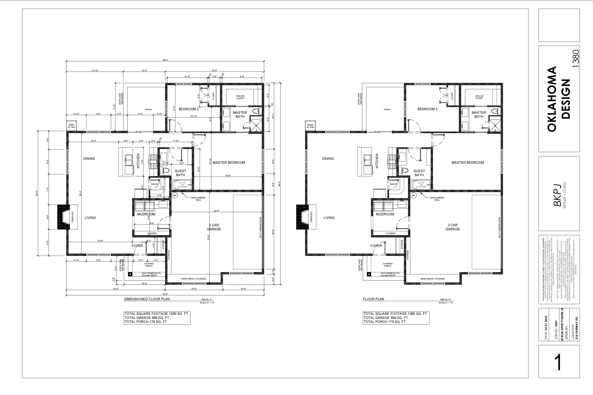
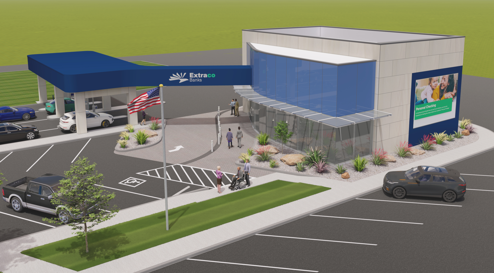
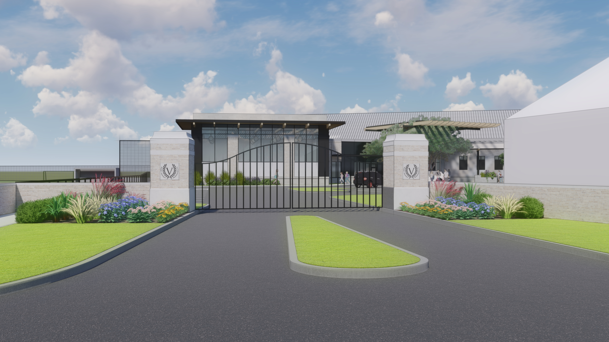

Designing for Sustainability
Exploring how modern architecture can balance innovation with ecological responsibility.
Architectural Designer | Waco, TX
I am a Waco, TX native with a passion for design. Here in the greater Waco area I offer architectural design services such as design drafting, 3D modeling & rendering, furniture design, landscape design, and design consulting. My work integrates modern, contemporary, and sustainable design principles with a focus on environmental and technological innovation. I design with social impact in mind — creating spaces that are responsive, inclusive, and forward-thinking.

A sustainable home design integrating passive cooling and natural materials.

Contemporary workspace promoting collaboration and biophilic design.

An environmentally responsive outdoor layout connecting built and natural environments.
Exploring how modern architecture can balance innovation with ecological responsibility.
Architecture as a catalyst for equity, accessibility, and community-driven change in the built environment.
Email: BKPJDESIGN@gmail.com